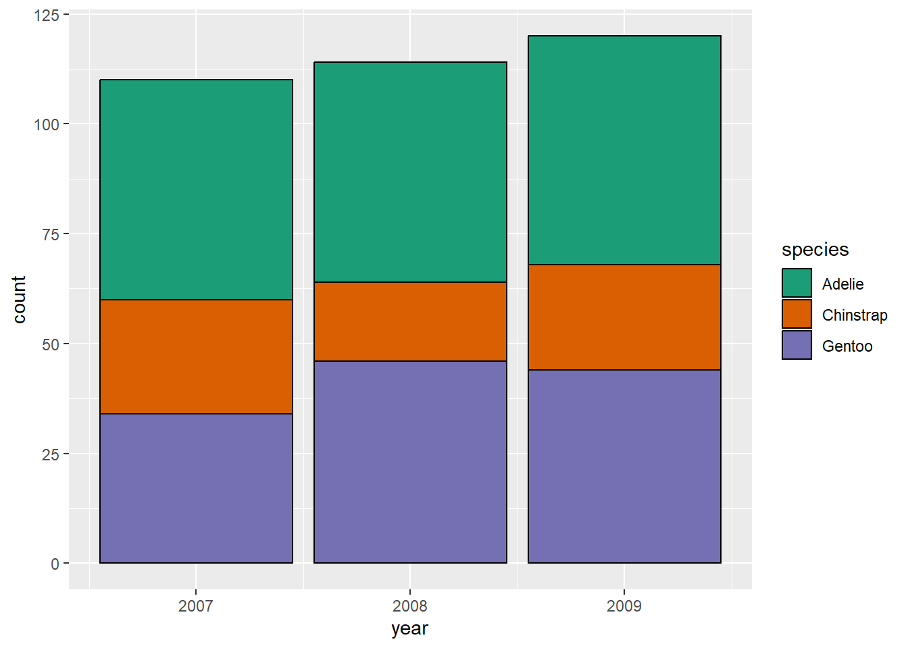
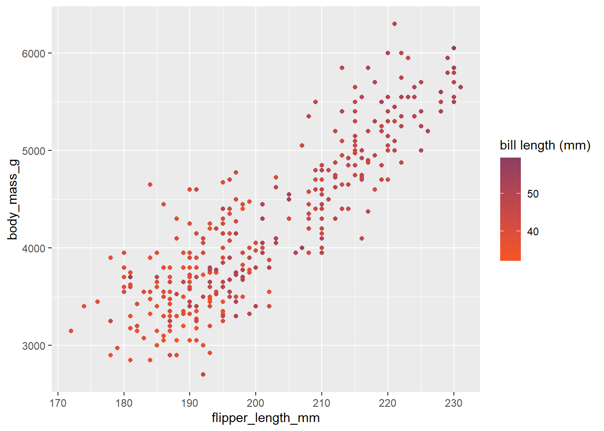

ggplot(data = penguins,
aes(x = species, y = body_mass_g)) +
geom_jitter() +
geom_boxplot(alpha = .75) +
scale_x_discrete(name = "penguin species", expand = expansion(mult = .2)) +
scale_y_continuous(name = "body mass (g)", breaks = c(3000, 4000, 5000))3 Scale functions
Visual markings of a ggplot object that are defined within the aes wrapper can be customised using a scale function. These functions are added to a ggplot object as additional layers. Each scale function will have different arguments related to the aesthetic they customise.
3.1 Customising axes
Scale functions that customise axes generally take the form scale_axis to customise_scale of variable. For example, Figure 2.4 would require scale_y_continuous to customise the numeric y-axis and scale_x_discrete to customise the categorical x-axis.
Axes scale functions contain many options that can be used to change the axis title, limits and ticks, amongst other things. Some of the most common arguments include:
name =changes the axis titlelimits = c(...)sets the axis limitsbreaks = c(...)defines tick markslabels = c(...)attaches labels to break pointsexpand = expansion(0)removes the default blank space around the axis limits (this can also be used to add space by replacing0with eitheradd =ormult =depending if this change is additive or multiplicative)transform =transform the scale the axis is shown on. Transformations includereverse,sqrt,log, etc. For a full list, view the appropriate help file
Warning
Do not adjust axis limits if this can potentially distort the data. Visualisations should adhere to the principle of proportional ink. That is, the amount of ink used in a visualisation should be proportional to the quantities it represents. Bar charts with a y-axis that does not begin at 0 is a common example of a violation of this principle.
3.2 Customising colour scales
There is a wide range of options available for customising colour and fill aesthetics within ggplot2. The choice will depend on the type of variable determining colours (whether it is numeric or categorical) and whether we want to use a pre-defined colour palette or manually specify our own.
Warning
When choosing a colour palette, be sure that all colours are distinct to everyone, including those with colour-vision deficiencies. To help check this is the case, use a colour blindness simulator to see what a visualisation looks like under different types of colour blindness.
Avoid potentially harmful stereotypes when choosing colours to represent groups, and avoid cyclical palettes, such as the rainbow palette, to avoid confusion between high and low values.

3.2.1 Pre-built colour palettes
There are thousands of colour palettes that are available within R. Some of them are included within the ggplot2 package, but there are many others that require additional package installation. This website gives a list and preview of all palettes currently available.
Colour palettes included within the ggplot2 package (and therefore don’t require any additional packages) are the viridis and colorbrewer scales. Both contain palettes that are colourblind friendly and can be used for either continuous or discrete scales.
For continuous data, use scale_colour_viridis_c or scale_colour_distiller to select one of the in-built colour palettes (replace colour with fill when dealing with bars). For discrete or categorical variables, use scale_colour_viridis_d or scale_colour_brewer instead.
For example, we could use a stacked bar chart to show the different number of penguins recorded per year by species. Each bar will represent the total observations per year, which will be separated into smaller bars per species. Each species will be assigned a different colour using the Dark2 colour scheme:
ggplot(data = penguins,
aes(x = year, fill = species)) +
geom_bar(colour = "black") +
scale_fill_brewer(palette = "Dark2") - 1
-
Use the
speciesvariable to change the colour of the bars. - 2
- Manually set the border of each bar to black to make it easier to see.

Hint
The geom_bar function contains the argument position which is set to position = "identity" by default, producing a stacked bar chart. Changing this option to "fill" would convert the graph to a proportional bar chart where each bar has the same height, comparing proportions across groups. Changing the position argument to "dodge" creates a side-by-side bar chart:
ggplot(data = penguins,
aes(x = year, fill = species)) +
geom_bar(colour = "black", position = "fill") +
scale_fill_brewer(palette = "Dark2")
ggplot(data = penguins,
aes(x = year, fill = species)) +
geom_bar(colour = "black", position = "dodge") +
scale_fill_brewer(palette = "Dark2")3.2.2 Customising colour palettes
There are various way of creating your own colour palette if you (or the organisation you are working with) have preferred colours.
For discrete or categorical variables, the scale_colour_manual (or scale_fill_manual) function allows colours to be specified using the values argument.
Style tip
R contains a list of 657 pre-programmed colours that can be used to create palettes (run colours() in the console for a full list).
Hexadecimal codes can also be included instead in the form #rrggbb (where rr (red), gg (green), and bb (blue) are numbers between 00 and 99 giving the level of intensity of each colour).
species_palette <- c("orchid", "turquoise", "rosybrown")
ggplot(data = penguins,
aes(x = year, fill = species)) +
geom_bar(colour = "black") +
scale_fill_manual(values = species_palette)- 1
- To avoid repetitive coding, define the colour palette as an object.
- 2
- Either list colour values or include the palette object. Ensure there are the same number of values as categories.
When including a continuous variable, palettes can be created using gradients. The choice of function depends on the number of gradients required:
scale_colour_gradient/scale_fill_gradient: specifies a two colour gradient based on alowandhighvaluescale_colour_gradient2/scale_fill_gradient2: specifies a three colour gradient based on alow,mid(defined by themidpointargument), andhighvaluescale_colour_gradientn/scale_fill_gradientn: specifies a palette with more than three colours, customised by settingcoloursand correspondingvalues.
For example, Figure 2.1 could be extended to include information about the bill length of penguins:
ggplot(data = penguins,
aes(x = flipper_length_mm, y = body_mass_g,
colour = bill_length_mm)) +
geom_point() +
scale_colour_gradient(name = "bill length (mm)",
high = "#8e3e63", low = "#F85525")

Warning
Ensure that the colours used to define gradients are distinct enough to make the graph clear (unlike the colours I used in Figure 3.4!).
Exercise 2
- Use an appropriate visualisation to compare the total core spending power in local authorities 2020 across regions of England. Highlight the London region in a different colour to the other regions to make it stand out more.
Exercise hint
If the total spend is not in the current dataset, create it! Also consider how colour could be included in the aes wrapper, and if this does not currently exist in the data, create it!
You will need the mutate and if_else functions.
- Customise the graph above to ensure the axes are labelled appropriately. Add axis breaks every £100million on the y-axis.
Exercise hint
breaks can either be manually specified or a function can be used to generate the list (check the seq function).